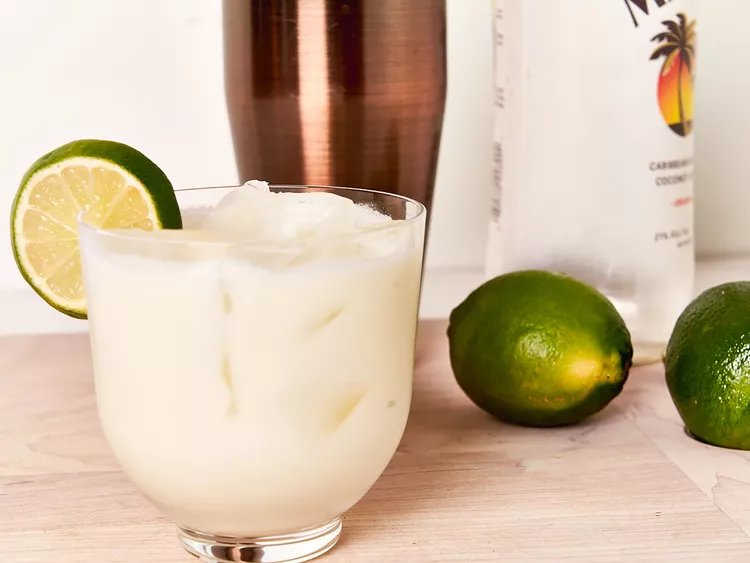

Limonada de Coco

La limonada de coco es una bebida refrescante y tropical que combina la acidez del limón con la
dulzura y cremosidad del coco. Es una opción popular en climas cálidos y se disfruta por su sabor único y
revitalizante.
- Limón: El jugo de limón fresco es el componente ácido principal, aportando un sabor cítrico y
agradable.
- Coco: La leche de coco o la crema de coco proporcionan la dulzura natural y una textura
cremosa característica.
- Dulzor: Se suele añadir un endulzante para equilibrar la acidez del limón, como azúcar,
sirope simple, leche condensada o incluso endulzantes naturales como la miel o el agave.
- Hielo: Se sirve bien fría con abundante hielo para potenciar su efecto refrescante.
- Presentación: A menudo se decora con rodajas de limón, hojas de menta o trozos de coco.
- Textura: La textura puede variar desde una bebida más líquida hasta una más espesa y cremosa
dependiendo de la cantidad de coco utilizada.
Ingredientes
- Ingredientes principales:
- Jugo de 4-6 limones grandes (aproximadamente ½ - ¾ taza)
- 1 lata (400 ml) de leche de coco (o crema de coco para una versión más espesa)
- ½ - ¾ taza de endulzante (azúcar, sirope simple, leche condensada, etc.), al gusto
- 4-6 tazas de agua fría (ajustar según la consistencia deseada)
- Hielo abundante
- Opcionales para el sirope simple (si usas azúcar):
- ½ taza de azúcar
- ½ taza de agua
- Opcionales para decorar:
- Rodajas de limón
- Hojas de menta fresca
- Trozos pequeños de coco fresco o rallado
- Notas:
- La cantidad de endulzante y agua se puede ajustar según tu preferencia de dulzor y consistencia.
- Utiliza limones frescos para obtener el mejor sabor.
- Para una limonada más intensa, puedes usar más jugo de limón.
Preparación
- Preparación del Sirope Simple (si usas azúcar granulada):
- En una olla pequeña, combina el azúcar y el agua.
- Calienta a fuego medio, revolviendo constantemente hasta que el azúcar se disuelva por completo.
- Retira del fuego y deja enfriar completamente. Puedes guardar el sirope simple restante en un recipiente hermético en el refrigerador.
- Extracción del Jugo de Limón:
- Lava bien los limones.
- Corta los limones por la mitad y exprime el jugo, asegurándote de retirar las semillas.
- Mide la cantidad de jugo de limón necesario.
- Mezcla de los Ingredientes:
- En una jarra grande, vierte el jugo de limón.
- Agrega la leche de coco (o crema de coco).
- Añade el endulzante (sirope simple ya preparado o directamente el azúcar, leche condensada, etc.). Si usas azúcar directamente, revuelve bien hasta que se disuelva lo más posible.
- Vierte el agua fría en la jarra.
- Revuelve bien todos los ingredientes hasta que estén completamente combinados y la mezcla tenga un color uniforme.
- Enfriar y Servir:
- Prueba la limonada y ajusta el dulzor o la acidez añadiendo más endulzante o jugo de limón si es necesario. También puedes ajustar la consistencia añadiendo más agua si la prefieres más ligera.
- Refrigera la limonada por al menos 30 minutos para que esté bien fría. También puedes servirla inmediatamente sobre abundante hielo.
- Al servir, llena vasos con hielo y vierte la limonada de coco.
- Decora con rodajas de limón, hojas de menta o trozos de coco si lo deseas.
Inicio